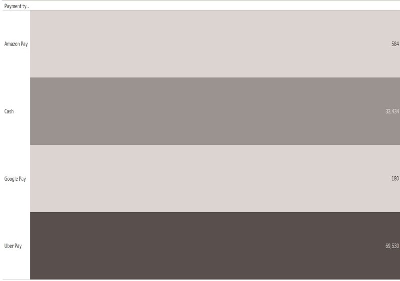
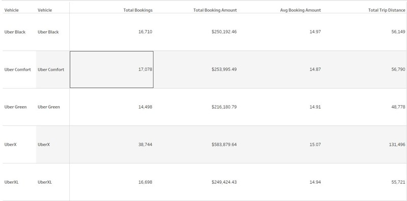
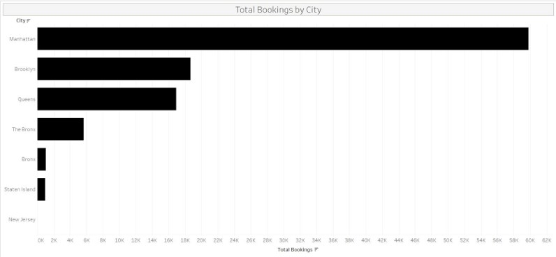
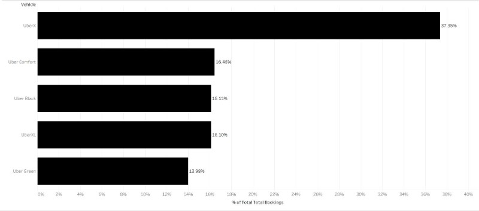
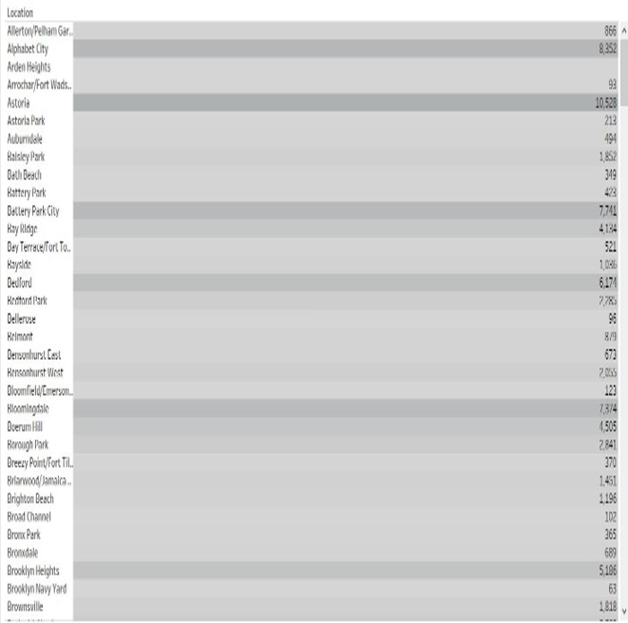

Storytelling with KPIs
1. Total bookings by payment type
Uber Pay is the most frequently used payment method, indicating strong adoption of the platform’s native wallet system.
Google Pay has the lowest number of bookings, suggesting it is less preferred among users in the dataset.
2. Vehicle type analysis
Uber X is the most preferred ride type with the highest number of bookings, total revenue, and total trip distance.
Uber Green has the lowest number of bookings, lowest total revenue, and least distance covered, indicating limited usage.
Uber Black leads in average booking amount, reflecting its premium pricing.
Uber Co has the lowest average booking amount, possibly due to shorter or more budget-friendly trips.
3. Total bookings by City
Manhattan records the highest number of bookings, reflecting its high population density and urban mobility needs.
New Jersey has the lowest number of bookings, indicating lower Uber usage in that region during the selected period
4. Total bookings by vehicle type
Uber X leads with the highest number of bookings, indicating it is the most preferred and widely used ride option.
Uber Green records the lowest number of bookings, suggesting limited adoption of electric or eco-friendly ride options in the current dataset.
5. Fare amount by location
The total fare amount generated across different locations, helping identify high-revenue and low-revenue zones based on trip data.
Highlights areas with high demand and higher fare contribution.
Useful for revenue optimization, surge planning, and marketing strategies in high-performing zones.